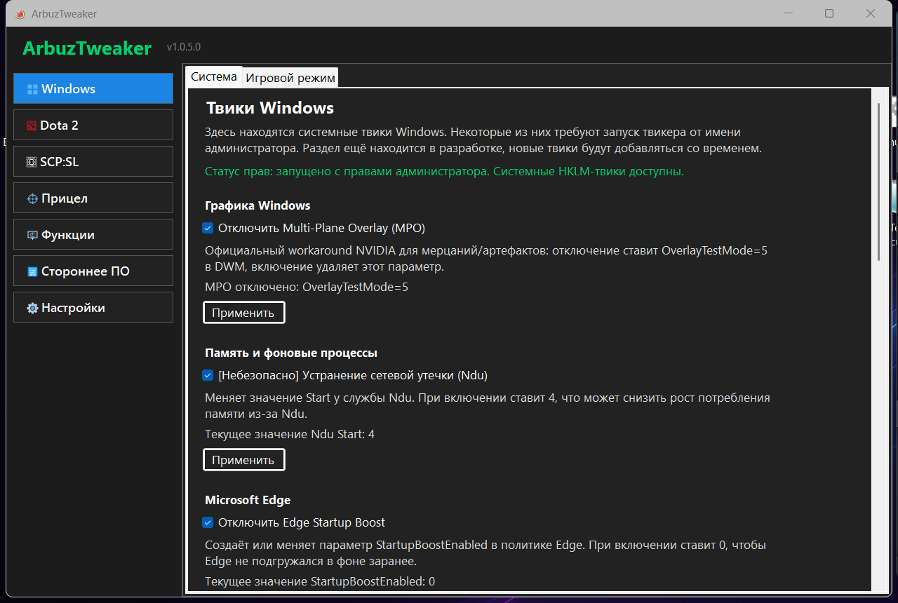
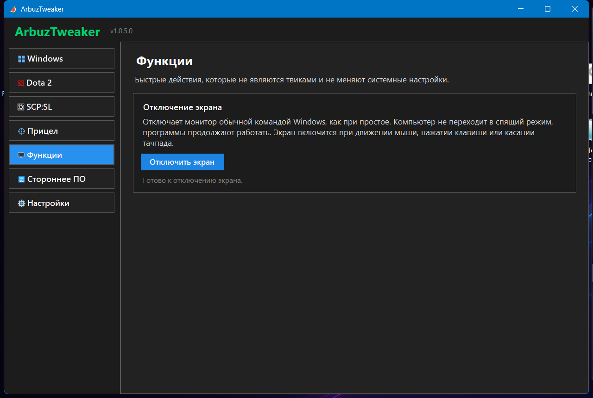
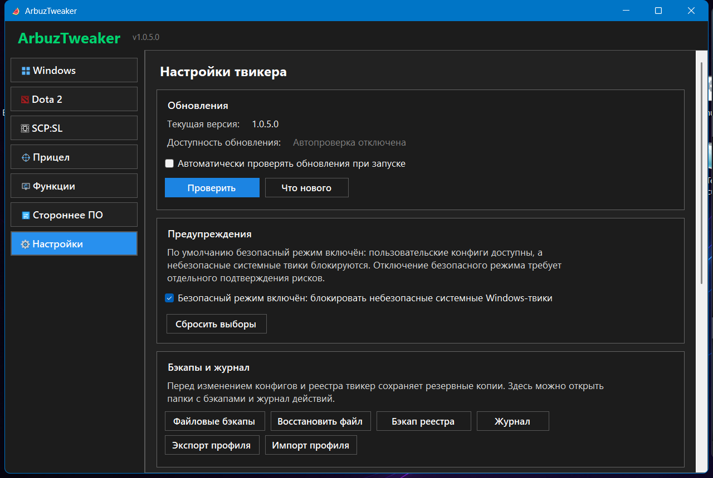

Windows-твики с безопасным режимом и статусом прав администратора.
Open-source Windows utility для понятной настройки Windows, Dota 2, SCP: Secret Laboratory, прицела-оверлея и вспомогательных инструментов. Приложение делает бэкапы перед изменениями и распространяется через GitHub Releases.

Windows-твики с безопасным режимом и статусом прав администратора.

Быстрые функции без изменения системных настроек.

Обновления, бэкапы, журнал и информация о безопасности.
autoexec.cfg, video.txt, LaunchOptionsSHA256SUMS.txtЧасть Windows-твиков требует прав администратора. Вкладка Windows показывает текущий статус прав и предупреждает перед системными изменениями.
ArbuzTweaker не является читом: он не делает DLL-инжект, не лезет в память процесса, не трогает античит, HWID, сеть игры, бан-обход и не автоматизирует игровой процесс. Игровые разделы работают через пользовательские конфиги и параметры запуска.
Перед изменениями создаются резервные копии. В приложении есть раздел Настройки -> Бэкапы и журнал, где можно открыть бэкапы файлов, восстановить файл, открыть бэкапы реестра и журнал действий.
Если SmartScreen или антивирус предупреждает о файле, проверьте источник скачивания, SHA256 из релиза и исходный код. Проект пока не подписан платным code-signing сертификатом, поэтому Windows может показывать предупреждение репутации.